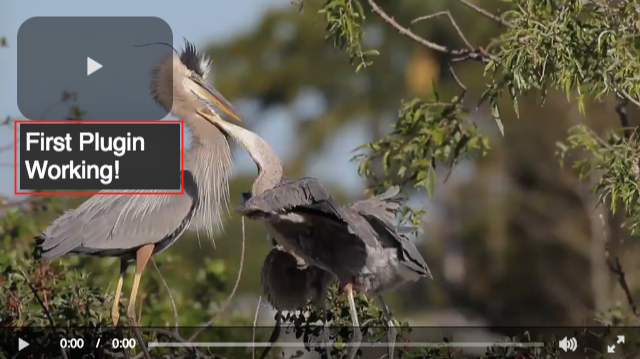
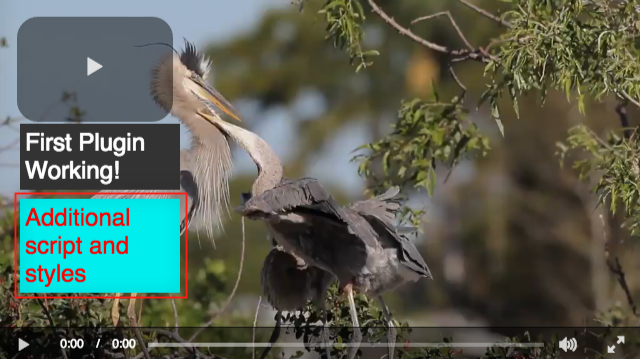

Dynamic Code Plugin
This guide shows you how to create a bootstrap plugin which adds functionality and styles at runtime. You will want to use this only if you are working with a partner who needs to add JavaScript and CSS to your player without having to re-build all of your players.

You will implement this example in two steps:
- Add the first plugin to the player. This could contain the base functionality for your player.
- Add the dynamic code plugin which will load additional JavaScript and CSS at runtime.
Get started
You can create your Brightcove player using Video Cloud Studio. There you can quickly create a player, associate a video and publish the player. For details, see the Quick Start to Brightcove player document.
After you have published the player, copy the In-Page Embed Code for the published player. It should look something like this:
Notice that we have added an id attribute so that we can get a reference to the player in later steps.
Next, you will use the embed-in-page implementation to test that the plugins are working. Then, you will switch to the iframe implementation.
First plugin
With the embed-in-page implementation, you will add the firstPlugin plugin to your player. This could be the base functionality that you have added to your player. You can keep the following files a local folder for testing. Later, you will place this in an internet accessible URL.
The JavaScript code
Here is the JavaScript code for the firstPlugin plugin.
The stylesheet
This example uses styles for the firstPlugin text box.
The HTML code
Add the following HTML to your page code.
- For the
firstPluginplugin, add a link to the CSS file and include the JavaScript file . - After the code above, add a
scriptsection as follows: - Line 36: Waits for your player to load.
- Line 37: Gets a reference to your player.
- Line 39: Initializes the
firstPluginplugin.
When you run this code in the browser, you should see the first plugin text displayed.

Dynamic code plugin
Now, you are ready to add the dynamic code plugin to the player. This will allow you or a partner to add JavaScript and CSS to your player at runtime without having to rebuild the player. You can keep the following files a local folder for testing. Later, you will place this in an internet accessible URL.
The JavaScript code
Here is the JavaScript code which will load your dynamic code and styles at runtime.
- Line 89: Gets a reference to the player.
- Lines 95,98: Dynamically create a
<script>and a<link>element in your HTML code. - Line 100: Sets a flag so that the script load handler is only excuted once.
- Lines 104-113: Define the
script.onload()handler function to call theinit()function when the runtime resources have been downloaded. - Lines 118,122: Define the URL to the custom JavaScript and CSS files to be loaded dynamically.
- Lines 124-125: Add attributes and values you just defined to the Define the URL to the
<script>and a<link>elements. - Line 129: Initializes the plugin with your dynamic code and styles. You will add this
secondPlugincode to your HTML in the next section.
Dynamic code
This section shows you how to easily add JavaScript functionality and custom styles to your player at runtime. You can keep the following files a local folder for testing. Later, you will place this in an internet accessible URL.
Dynamic JavaScript code
This plugin contains any JavaScript code that you want to load at runtime. In this example, it will create another text box overlay in the player, below the first.
Dynamic styles
This example uses styles for the secondPlugin text box.
The HTML code
Add the following HTML to your page code.
- For the
dynamicCodeplugin, include the JavaScript file. - After the code above, add code to the
scriptsection as follows: - Line 36: Waits for your player to load.
- Line 37: Gets a reference to your player.
- Line 39: Initializes the
firstPluginplugin.
When you run this code in the browser, you should see the additional text box displayed in the player along with the original plugin text box.

Use iframe
With the iframe implementation, you will use Video Cloud Studio to add the plugin and options to your player instead of doing it in the page code. Follow these steps to add the plugin:
Return to the Brightcove player that you created earlier using Video Cloud Studio.
Scroll down to the Plugins section and select the edit button for this section.
Expand the JavaScript section and enter the URL for the Google Analytics plugin which you placed in an internet accessible URL earlier.
Expand the Name, Options (JSON) section.
In the Name input field, enter the value
gafor the name of the Google Analytics plugin.In the Options (JSON) input field, enter the
trackeroption with your tracker code value for Google Analytics. You can add other options here as well.Select the Save button for the Plugins section.
You can either test with the preview version of the player, or you can publish the player. For this guide, let's publish the player. Select the Publish button at the top.
Expand the Embed Code & URL button and copy the iframe Embed Code for the published player.
Paste the iframe code into your page code and run it in the browser. You should be able to see the player and video events in your Google Analytics Reporting page.


Your page code should look something like this: